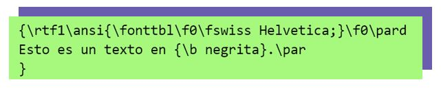
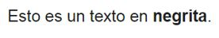

Definición
RTF sirve como un estándar de transferencia de datos entre el software de procesamiento de texto y la
transferencia de contenido de un sistema operativo a otro.
Un archivo RTF estándar consiste en ASCII para representar texto enriquecido y con caracteres que no son
ASCII que se convierten en valores de código apropiados. El estándar ASCII consiste en:
¿Quién lo propuso?
El Rich Text Format (RTF) fue introducido y documentado por Microsoft.
Fue desarrollado por Richard Brodie, Charles Simonyi y David Luebbert, miembros de un equipo de
desarrollo de Microsoft a mediados de los 80’s.
¿Para qué fue creado?
El Rich Text Format fue desarrollado como un método de codificación texto y gráficos para:
- Ayudar a intercambiar archivos de texto entre los diferentes procesadores de los diferentes SO.
- Se transfería documentos entre MS-DOS, Windows, OS/2 y aplicaciones Apple Macintosh.
¿De qué se compone?
Los archivos RTF utilizan texto sin formato ASCII de 7 bits, que consta de:
- Palabras de control.
- Símbolos de control.
- Grupos.
Estos actúan como bloques de construcción para la representación de datos RTF como texto comprensible y
codificación de caracteres.
Ejemplo
Como ejemplo, el siguiente código RTF:

Se muestra así cuando es representado por un programa que soporta RTF:

Características
- Ampliamente legible: Todos los principales procesadores de texto y otro tipo de programas pueden leer
texto RTF.
- Ventajas de seguridad: RTF es un formato más confiable que .DOC y no deja un "rastro de edición".
- Conserva el formato básico: La información de fuente y las selecciones de estilo de texto se conservan
en RTF.
- Tamaño de archivo más pequeño: Debido a que no guarda los datos del historial del documento.
Versiones
- 1987: VERSIÓN 1.0. Para Microsoft Word 3.0. Esta versión de RTF utiliza ANSI, PC-8, conjuntos de
caracteres de Macintosh o IBM PC para controlar el formato de un archivo
- 1989: VERSIÓN 1.1. Para Microsoft Word 4, surgió incrustación de fuentes, las cuales se ubicaban dentro
del archivo .rft.
- 1991: VERSIÓN 1.2. Para Microsoft Word 5, esta especificación definió el uso de objetos de dibujo
(formas geométricas).
- 1994: VERSIÓN 1.3. Los mapas de bits empezaron a ser incrustados en Metarchivos de Windows.
- 1995: VERSIÓN 1.4. Para Microsoft Word 95. Contiene todos los controles RTF introducidos por el
lanzamiento de Word 7.0.
- 1997: VERSIÓN 1.5. Se introdujo Unicode RTF y se incluyeron los tipos de imagen.
- 1999: VERSIÓN 1.6. Para Microsoft Word 2000. Se incluyó Pocket Word y Exchange.
- 2001: VERSIÓN 1.7. Para Microsoft Word 2002. Se incluyeron nuevas palabras de control y se actualizaron
las anotaciones.
- 2004: VERSIÓN 1.8. Para Microsoft Word 2003. Se incluyeron extensiones para nuevos comandos para poder
utilizar funciones de Word 2003.
- 2008: VERISÓN 1.9.1. Para Microsoft Word 2007. Permitió el Marcado XML, elementos matemáticos,
protección con contraseña, elementos Office Open XML.